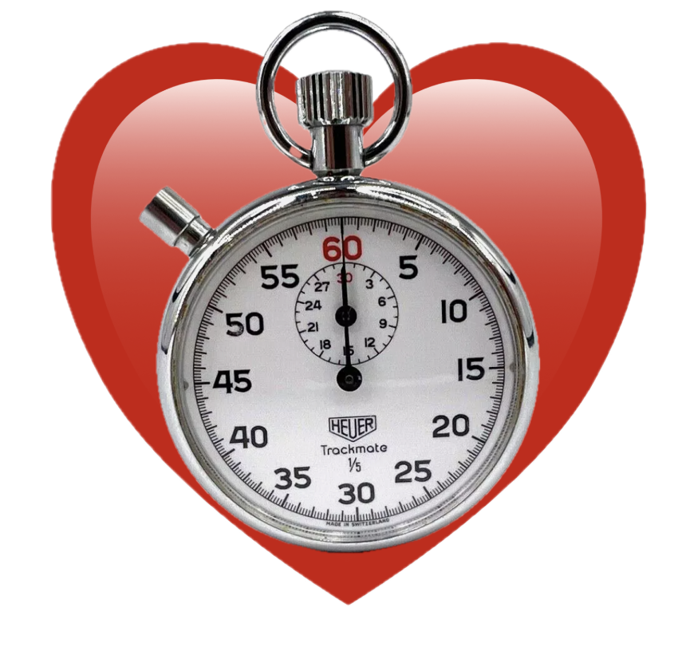

Video Workout Timer Settings
Use this extension when doing circuit training, so your favorite music will help you transition to the next station on time.
enabled
When enabled, this extension will play a portion of a video and then transition to the next video after a transition period.
Video Duration (seconds):
Transition Time (seconds):
Save
git source code